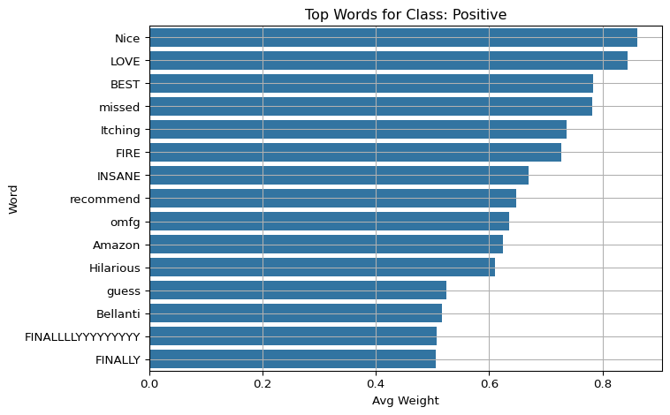
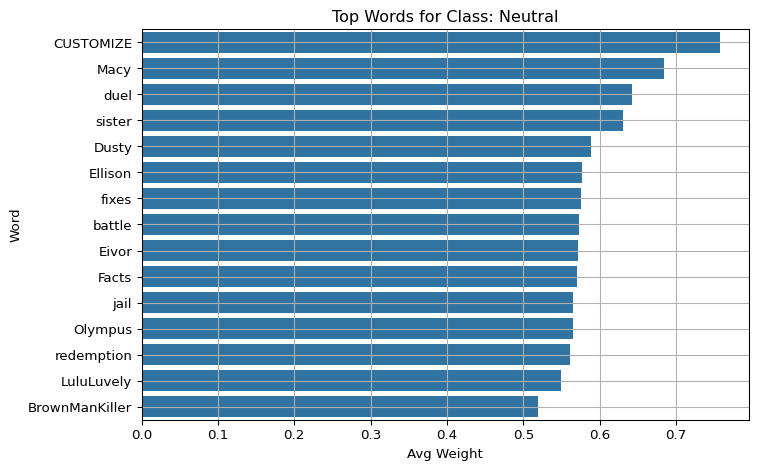
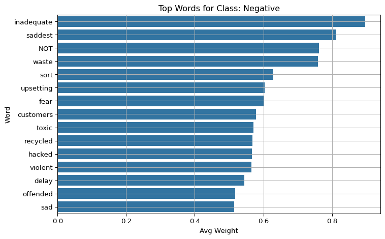
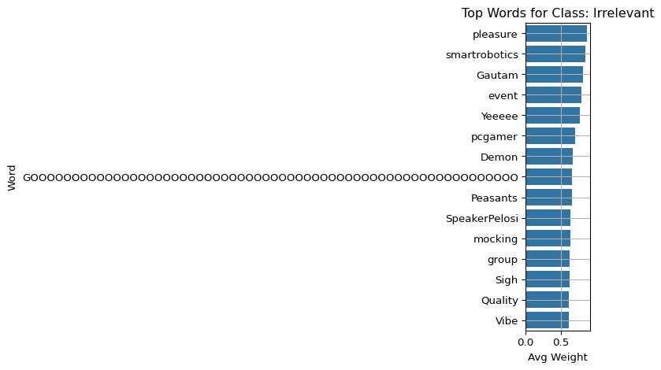
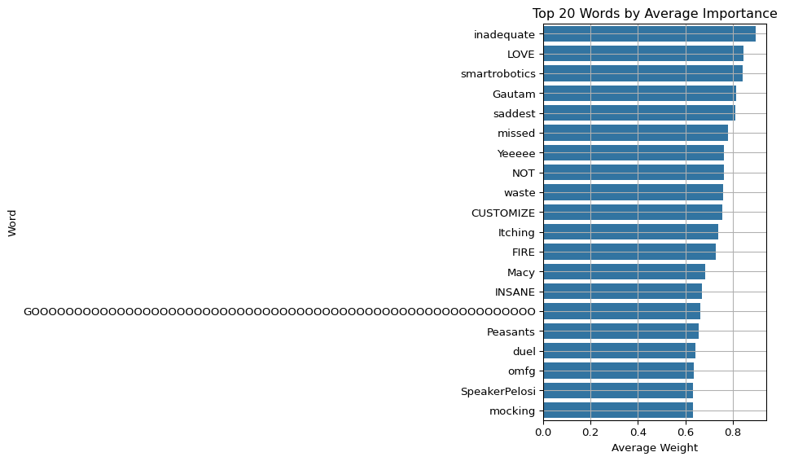
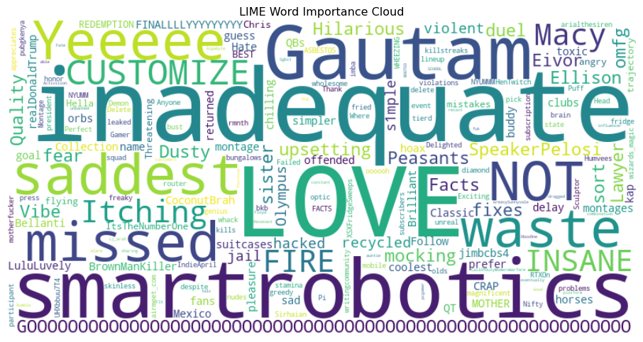

Systematically evaluate the interpretability of a fine-tuned BERT sentiment model using LIME on all validation tweets: - Extract and aggregate top words by importance - Visualize most influential words via word cloud - Assess explanation consistency under perturbations
5.2 Background: BERT and the Need for Interpretability
BERT (Bidirectional Encoder Representations from Transformers) is a deep pre-trained language model capable of understanding contextual relationships in text. It is fine-tuned on downstream tasks such as sentiment classification to achieve state-of-the-art performance.
However, due to its complexity and non-linearity, BERT behaves like a “black-box” model, making it difficult to understand its predictions.
LIME helps address this by approximating the local decision boundary around a specific input, allowing us to identify which words influenced the model’s prediction the most.
5.3 Load Model, Tokenizer, and Validation Set
Load the fine-tuned BERT model and tokenizer, and prepare a cleaned sample of tweets from the validation set for explanation.
Define a wrapper function that returns prediction probabilities (needed by LIME), and initialize the LIME explainer with class names.
Code
from lime.lime_text import LimeTextExplainer# Define prediction wrapperdef bert_predict_proba(texts): inputs = tokenizer(texts, return_tensors="pt", padding=True, truncation=True, max_length=128) inputs = {k: v.to(model.device) for k, v in inputs.items()}with torch.no_grad(): outputs = model(**inputs) probs = torch.nn.functional.softmax(outputs.logits, dim=-1)return probs.cpu().numpy()# Initialize LIMEexplainer = LimeTextExplainer(class_names=class_names)
5.5 Run LIME on Validation Set and Collect Word Importances
Word Importances Run LIME on each tweet to get top influential words and their weights. Store the results for later visualization and analysis.
Code
import emojiimport pandas as pddef clean_text(text): no_emoji = emoji.replace_emoji(text, replace='') cleaned = no_emoji.encode("utf-8", "ignore").decode("utf-8", "ignore")return cleanedall_weights = []print(f"Starting explanation on {len(val)} tweets...")for idx, row in val.iterrows(): text = clean_text(str(row["tweet"])) true_sentiment = clean_text(str(row["sentiment"]))try: explanation = explainer.explain_instance( text_instance=text, classifier_fn=bert_predict_proba, num_features=10, top_labels=1, num_samples=100 ) label_idx = explanation.top_labels[0] pred_label = class_names[label_idx] exp_list = explanation.as_list(label=label_idx)ifnot exp_list:print(f"⚠️ No explanation for tweet {idx}: {text[:30]}")continuefor word, weight in exp_list: all_weights.append({"tweet": text,"true_label": true_sentiment,"pred_label": clean_text(pred_label),"word": clean_text(word),"weight": weight })exceptExceptionas e:print(f"❌ Error on tweet {idx}: {e}")continuedf_weights = pd.DataFrame(all_weights)print("✅ All explanations completed.")
Starting explanation on 1000 tweets...
✅ All explanations completed.
5.6 Visualize Top Words by Class
For each sentiment class, plot the average contribution of the top words that most influenced the model’s predictions for that class.
Code
import matplotlib.pyplot as pltimport seaborn as snsfor label in class_names: subset = df_weights[df_weights["pred_label"] == label] top_words = subset.groupby("word")["weight"].mean().sort_values(ascending=False).head(15) plt.figure(figsize=(8, 5)) sns.barplot(y=top_words.index, x=top_words.values) plt.title(f"Top Words for Class: {label}") plt.xlabel("Avg Weight") plt.ylabel("Word") plt.grid(True) plt.tight_layout() plt.show()




5.7 4. Visualize Top Words (Mean Weight)
Code
import matplotlib.pyplot as pltimport seaborn as sns# Top contributing wordstop_words = df_weights.groupby("word")["weight"].mean().sort_values(ascending=False).head(20)plt.figure(figsize=(10,6))sns.barplot(y=top_words.index, x=top_words.values)plt.title("Top 20 Words by Average Importance")plt.xlabel("Average Weight")plt.ylabel("Word")plt.grid(True)plt.tight_layout()plt.show()

5.8 5. Word Cloud of Influential Words
Code
from wordcloud import WordCloudword_freq = df_weights.groupby("word")["weight"].mean().to_dict()wordcloud = WordCloud(width=800, height=400, background_color="white").generate_from_frequencies(word_freq)plt.figure(figsize=(12, 6))plt.imshow(wordcloud, interpolation="bilinear")plt.axis("off")plt.title("LIME Word Importance Cloud")plt.show()

5.9 6. (Optional) Stability Evaluation with Minor Perturbations
Code
from nltk.corpus import wordnetimport randomimport nltknltk.download('wordnet')# Simple synonym substitution for robustness testingdef synonym_replace(text): words = text.split() new_words = []for word in words: syns = wordnet.synsets(word)if syns and random.random() <0.2: lemmas = syns[0].lemma_names()if lemmas: new_words.append(lemmas[0].replace("_", " "))continue new_words.append(word)return" ".join(new_words)# Compare explanations between original and perturbed textsimilarities = []for i inrange(len(val)): text = val.iloc[i]["tweet"] perturbed = synonym_replace(text) expl_orig = explainer.explain_instance( text, bert_predict_proba, num_features=10, top_labels=1, num_samples=100 ) expl_pert = explainer.explain_instance( perturbed, bert_predict_proba, num_features=10, top_labels=1, num_samples=100 ) words_orig =set(w for w, _ in expl_orig.as_list(label=expl_orig.top_labels[0])) words_pert =set(w for w, _ in expl_pert.as_list(label=expl_pert.top_labels[0])) jaccard =len(words_orig & words_pert) /len(words_orig | words_pert) similarities.append(jaccard)print(f"Average Jaccard similarity over {len(val)} samples: {np.mean(similarities):.3f}")
[nltk_data] Downloading package wordnet to
[nltk_data] C:\Users\16925\AppData\Roaming\nltk_data...
[nltk_data] Package wordnet is already up-to-date!
Average Jaccard similarity over 1000 samples: 0.475
5.10 Summary
This notebook evaluated the interpretability of a BERT model on a validation set using LIME: - Aggregated word importance from all tweets - Visualized dominant features via barplot and word cloud - Measured stability of explanations under synonym substitution
This approach provides a quantitative view of how and why your model makes predictions. You can now include these results in your interpretability report or presentation.